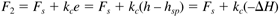
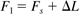
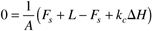
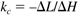
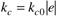
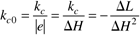

| [ Team LiB ] |
|
M10.3 Controller DesignHere we consider a P-only controller, since offset is less important than minimizing manipulated variable movement. The question is: What value of the proportional gain should be used? It seems reasonable to select a value for the proportional gain that will just assure that constraints will not be violated for the worst-case expected disturbance. Assume that level alarms are set at 20% and 80% of the volume of the vessel. Let DH represent the magnitude of the maximum allowable deviation of the tank height from setpoint, and let DL represent the maximum magnitude of a step disturbance. Proportional GainAssuming that the flow rate out is proportional to the deviation from setpoint,  where kc is a negative number since the flow rate must increase if the tank height is above the setpoint value. The step change in the load disturbance is DL,  and the value at the new steady-state after a step disturbance is [from Equation (M10.1)]  which yields  Nonlinear Proportional GainSince small deviations from setpoint are not critical, it may be desirable to have a controller gain that varies as a function of the magnitude of the error. A possible formulation is  Again, the value of the kc0 term can be determined from the proportional gain term in Equation (M10.5),  |
| [ Team LiB ] |
|